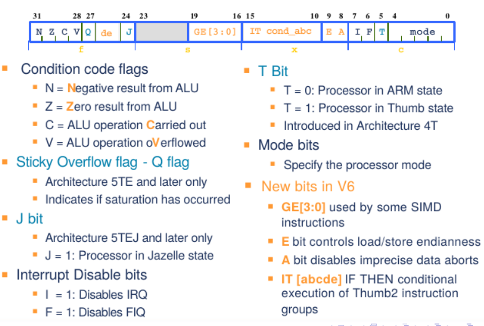
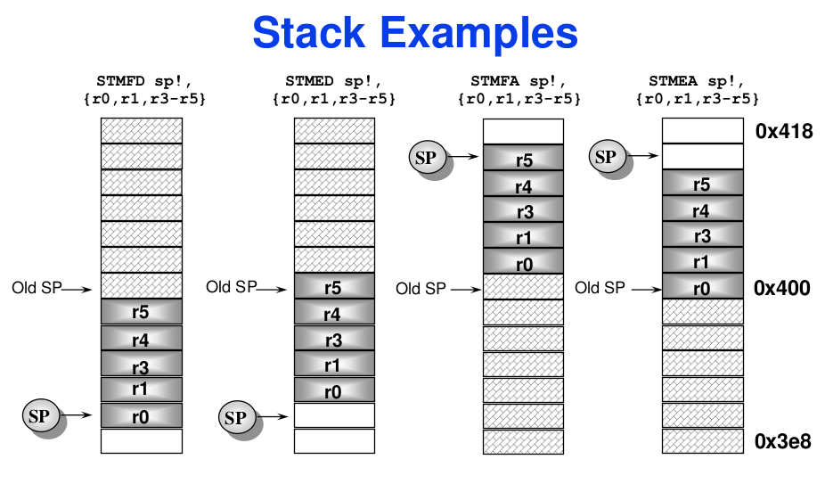

Assembly instructions
The ARM assembly instructions are all operations that can be performed between registers and memory. The full list of instructions can be consulted at ARM® Architecture Reference Manual ARMv7-A and ARMv7-R edition
Architecture review
The following image shows the ARM CPU architecture.

All ARM instructions depend on two buses: the A bus and the B bus, both corresponding to registers. Only the B bus can store Data out to the memory, or be operated by the Barrel shifter.
Arithmetic operations can be performed between the A and B buses; meanwhile, their result or the Data in from the memory, can be stored in another register, while the Address register (program counter) updates the Address bus.
All operations, therefore, must be done on registers, and not directly on memory. In the following image there is a list of the available registers under user mode (different modes are explained in the interruptions section).

Conditional instructions and CPSR
The CPSR (Current Program Status Registers) holds information about the flow of the program execution:

| Name | Logical instruction | Arithmetic instruction |
|---|---|---|
| N (Negative) | --- | Bit 31 of result is set (negative number) |
| Z (Zero) | Result is all zeros | Result is "0" |
| C (Carry) | After shift operation, "1" was left in carry flag | Result is greater than 32 bits (adding two positive numbers gives a positive and lower number) |
| V (oVerflow) | --- | Result is corrupted (Adding two positives numbers gave a negative one) |
If the instruction ends with and S, the flags in the CPSR will be updated. If the instruction ends with one of the following mnemonics, the instruction will be conditionally executed.
| \ |
Flags | Math | Abbreviation meaning |
|---|---|---|---|
| al | Any | --- | Always |
| eq | Z=1 | A=0 | Equal "0" |
| ne | Z=0 | A=0 | Not Equal "0" |
| ge | (N=1 & V=1) | (N=0 & V=0) | A ≥ B | Greater or Equal |
| lt | (N=1 & V=0) | (N=0 & V=1) | A < B | Less Than |
| gt | Z=0 & ((N=1 & V=1) | (N=0 & V=1)) | A > B | Greater Than |
| le | Z=0 | (N=1 & V=0) | (N=0 & V=1) | A ≤ B | Less or Equal |
| hi | C=1 & Z=0 | A > B | Higher |
| ls | C=0 | Z=1 | A ≤ B | Lower or Same |
| hs | cs | C=1 | A ≥ B | Higher or Same |
| lo | cc | C=0 | A < B | Lower |
| mi | N=1 | A < 0 | Minus |
| pl | N=0 | A ≥ 0 | Plus |
| vs | V=1 | --- | Overflow Set |
| vc | V=0 | --- | Overflow Clear |
In the case of a conditional instruction that should update the CPSR, for example addeqs, the operation will be performed and the CPSR will be updated with its result only if the condition holds true.
The following is an example of conditionally executed instructions:
ldr r0, =44
ldr r1, =55
cmp r0 r1 // compare r0 and r1
addlt r0, r0, #11 // r0 = r0 + 11 if previous comparison gave that r0 < r1 (true)
subs r0, r0, r1 // r0 = r0 - r1 and update flags
addeq r0, r0, #22 // r0 = r0 + 22 if previous operation was equal to "0" (true)
Addresses
Given a memory address (Rn), its contents can be accessed as follows:
| Syntax | Result |
|---|---|
[Rn] |
Access contents of Rn. |
=<Immediate|symbol> |
Access contents of the immediate constant or symbol. |
[Rn, #±<offset_12bits>]{!} |
Access contents of Rn ± <offset>. Offset is a 12 bit number [-4095, 4095]. If it ends with !, then Rn is updated. |
[Rn, ±Rm, <shift_op> #<shift>]{!} |
Access contents of Rn ± (Rm << shift). If it ends with !, then Rn es updated. |
[Rn], #±<offset_12bits> |
Access contents of Rn, and then let Rn = Rn ± <offset>. |
[Rn], ±Rm, <shift_op> #<shift> |
Access contents of Rn, and then let Rn = Rn ± (Rm << shift). |
Load and Store register (ldr, str, ldm, stm, pop, push)
For single registers use load ldr and store str instructions:
ldr{<cond>}{<size>} Rd, <address> // Load register: Rd <== *Address
str{<cond>}{<size>} Rd, <address> // Store register: *Address <== Rd
<size>: By default, it will work on words (32 bits).b: unsigned byte.h: unsigned half-word.sb: signed byte.sh: signed half-word.
For multiple registers:
ldm<variant> Rd{!}, <register_list> // Load multiple
stm<variant> Rd{!}, <register_list> // Store multiple
-
<variant>: How to navigate the memory (normally use full descending mode).ia|fd: Increment after | full descending.ib|ed: Increment before | empty descending.da|fa: Decrement after | full ascending.db|ea: Decrement before | empty ascending.
-
{!}: If included, value of Rd is updated with the new address. -
<register_list>: enclosed with{}, comma separated registers, or range of registers with a-, for example{r1, r3, r6-r8} = r1, r3, r6, r7, r8.
To manage stack variables, the preferred way is to use the following instructions. The stack behaves like a LIFO (Last In, First Out).
pop{<cond>} <reg_list> // Pop from stack. Equivalent to "ldmfd sp!, <reg_list>"
push{<cond>} <reg_list> // Push to stack. Equivalent to "stmfd sp!, <reg_list>"
When using a register list, the lowest register will be stored in the lowest address. For example, if you were to push multiple registers, you'd see in memory:
Likewise, if you were to pop multiple registers like pop {r1, r5, r9-11}, you will retrieve the lowest address' contents into the lowest register, and end up retrieving everything correctly.
push {r0, r2, r7-r9} // TOP | r9 | r8 | r7 | r2 | r0 | | BOTTOM
push {r5} // TOP | r9 | r8 | r7 | r2 | r0 | r5 | BOTTOM
pop {r5} // TOP | r9 | r8 | r7 | r2 | r0 | | BOTTOM r5=r5
pop {r0, r2} // TOP | r9 | r8 | r7 | | | | BOTTOM r0=r0; r2=r2
pop {r7-r9} // TOP | | | | | | | BOTTOM r7=r7, r8=r8, r9=r9

Branch (b, bl, bx, blx adr)
A label is defined in assembler as a name followed by a colon. Labels are useful to define points in the code to branch to, such as the start of a function, a for loop, or just as a reference.
A branch instruction can be as large as +-32 MBytes in memory, if used with a label. This is because the 32-bit instruction can't hold a 32-bit address, because some of the bits are used to encode the branch instruction itself. If the jump is larger than that, then a veneer is used by the compiler, which means that the address is loaded in the register r12, and jumps from that register.
b{<cond>} <label> // Branch to target label
bl{<cond>} <label> // Branch and Link. lr = pc (for returning)
bx{<cond>} Rn // Branch and exchange. Change to Thumb (pc_LSB=1) or ARM (pc_LSB=0) mode.
blx{<cond>} <label> // Branch, link and exchange. Same as "bx", but lr = pc
adr{<cond>}{s} Rd, <label> // Copy address from label to register
A typical application of the branch instruction is to perform a for loop, such as:
// This is equivalent to
// for(i=0; i<5; i++) {}
mov r0, #0
loop:
add r0, r0, #1
cmp r0, #5
blt loop
Data Processing instructions
Second operand and barrel shifter
The second operand for data processing instruction will go through the barrel shifter, which can do the following in the same clock cycle:
- Define an immediate constant of 8 bits (0-255).
- Define an immediate constant of 32 bits, only if that value can be constructed by:
- Rotating right an 8 bit constant for an even number from 0 to 30. (For example, 0x400 = 0x40 ROR 28)
- Making the 1's complement.
- Rotate left or right the register
Rmup to 31 positions.
The list of possible second operands is as follows:
#<immediate_value> // Constant value of 8 bits or specially rotated.
Rm // Single register
Rm, <shift_op> #<shift_value> // Rm << shift_value (Rotate register by constant)
Rm, <shift_op> Rs // Rm << Rs (Rotate register by other register)
Rm, rxx // (C|Rm) >> 1 (Rotate right 1 position, including the Carry flag)
Shifting (lsl, lsr, asr, ror, rrx)
All shifting operations can be used as <shift_op> with the barrel shifter, or as independent commands.
Rm, lsl #<value> // Logical shift left
Rm, lsr #<value> // Logical shift right
Rm, asr #<value> // Arithmetic shift right (sign preserved)
Rm, ror #<value> // Rotate Right
Rm, rrx // Rotate right by 1 position, but the Carry flag is included.
Comparison (cmp, cmn, tst, teq)
These instructions only update the CPSR. They perform and arithmetic operation, but discard the result.
cmp{<cond>} Rn, Operand2 // Compare: Rn - op2
cmn{<cond>} Rn, Operand2 // Compare negative: Rn + op2
tst{<cond>} Rn, Operand2 // Test: Rn & Op2
teq{<cond>} Rn, Operand2 // Test equivalence: Rn XOR Op2
Arithmetic (add, adc, sub, sbc, rsb, rsc, neg)
add{<cond>}{s} Rd, Rn, Operand2 // Add: Rd = Rn + op2
adc{<cond>}{s} Rd, Rn, Operand2 // Add with carry: Rd = Rn + op2 + carry
sub{<cond>}{s} Rd, Rn, Operand2 // Subtract: Rd = Rn - op2
sbc{<cond>}{s} Rd, Rn, Operand2 // Subtract with carry: Rd = Rn - op2 + carry - 1
rsb{<cond>}{s} Rd, Rn, Operand2 // Reverse subtract: Rd = op2 - Rn
rsc{<cond>}{s} Rd, Rn, Operand2 // Reverse subtract with carry: Rd= op2 - Rn + Carry - 1
neg{<cond>}{s} Rd, Rn // Negate: Rd = -Rn. Same as "rsb Rd, Rn, #0"
Logical (and, orr, eor, orn, bic)
and{<cond>}{s} Rd, Rn, Operand2 // Bitwise AND: Rd = Rn & op2
orr{<cond>}{s} Rd, Rn, Operand2 // Bitwise OR: Rd = Rn | op2
eor{<cond>}{s} Rd, Rn, Operand2 // Bitwise XOR: Rd = Rn XOR op2
orn{<cond>}{s} Rd, Rn, Operand2 // Bitwise OR negated: Rd = !(Rn | op2)
bic{<cond>}{s} Rd, Rn, Operand2 // Bit clear: Rd = Rn & !(op2)
Data movement
Unlike ldr instructions, which load a value from memory, these instructions load a value from other register or use an immediate value. In the case of the instructions of the type ldr Rn, =<immediate_const>, they will be assembled into an equivalent mov Rn, #<immediate_const> if possible, or load a value in ROM and read it as ldr Rn, [pc, #offset_pc].
mov{<cond>}{s} Rd, Operand2 // Move: Rd = op2
mvn{<cond>}{s} Rd, Operand2 // Move not: Rd = !op2 (1's complement)
movt{<cond>} Rd, #immed16 // Move top: Rd = (immed16 << 16) | (Rd & 0xFFFF)
Multiplication with 32 bits result (mul, mla)
Registers Rd and Rm should be different, or a compiler warning may appear.
mul{<cond>}{s} Rd, Rm, Rs // Multiply: Rd = Rm * Rs
mla{<cond>}{s} Rd, Rm, Rs, Rn // Multiply and accumulate: Rd = Rm * Rs + Rn
Multiplication with 64 bits result (smull, umull, smlal, umlal)
The 32 LSB will be stored in RdLo, while the 32 MSB will be stored in RdHi (RdHi : RdLo).
smull{<cond>}{s} RdLo, RdHi, Rm, Rs // Signed multiply long: RdHi : RdLo = Rm * Rs
umull{<cond>}{s} RdLo, RdHi, Rm, Rs // Unsigned multiply long: RdHi : RdLo = Rm * Rs
smlal{<cond>}{s} RdLo, RdHi, Rm, Rs // Signed multiply and accumulate long: RdHi : RdLo = Rm * Rs + RdHi : RdLo
umlal{<cond>}{s} RdLo, RdHi, Rm, Rs // Unsigned multiply and accumulate long: RdHi : RdLo = Rm * Rs + RdHi : RdLo
Division (sdiv, udiv)
sdiv{<cond>}{s} Rd, Rm, Rn // Signed division: Rd = Rm / Rn
udiv{<cond>}{s} Rd, Rm, Rn // Unsigned division: Rd = Rm / Rn
Misc (clz)
System instructions
Nop (nop)
Access CPSR and SPSR (mrs, msr, cps)
mrs{<cond>} Rd, <special_reg>{_<fields>} // Move status to register: Rd = <special_reg>
msr{<cond>} <special_reg>{_<fields>}, Rd // Move register to status: special_reg = Rd
The special register can be:
- CPSR: Current program status register.
- SPSR: Saved program status register.
- xPSR (APSR, IPSR, EPSR): Current program status register, but for Cortex-M processor.
- PRIMASK|FAULTMASK|BASEPRI: Cortex-M interrupt priority.
- CONTROL: Cortex-M operation mode.
The optional <fields> is any combination of (see CPSR image for meaning):
c: control field.x: extension field.s: status field.f: flag field.
cps #<mode> // Change Processor State (to certain operation mode)
cps{ie|id} a|i|f {, #<mode>} // Interrupt Enable or Interrupt Disable any combination of the "Abort, IRQ, or FIQ" interrupts.
| \ |
User | FIQ | IRQ | Supervisor | Abort | Undef | System |
|---|---|---|---|---|---|---|---|
| Code | 0x10 | 0x11 | 0x12 | 0x13 | 0x17 | 0x1B | 0x1F |
Software interrupt (swi, svc, wfi, srs, rfe)
svc{cond} #<syscall_number> // SuperVisor Call
swi{cond} #<syscall_number> // Software interrupt, same as SVC
SVC_handler:
ldrb r0, [lr, #-4] // Get in r0 the syscall_number
movs pc, lr
The srs instruction (Save Return Status) saves the Link Register (lr) and the SPSR of the current mode in the stack of the <mode> specified. The rfe instruction (Return From Interrupt) is the opposite, and must be used always in conjunction with the srs one.
srs sp{!}, #<mode> // Store Return Status
cps #<mode> // Change to different mode
rfe sp{!} // Return From Exception, using the stack pointer of #<mode>
Recommended bibliography
Modern Assembly Language Programming with the ARM Processor, Larry D Pyeatt